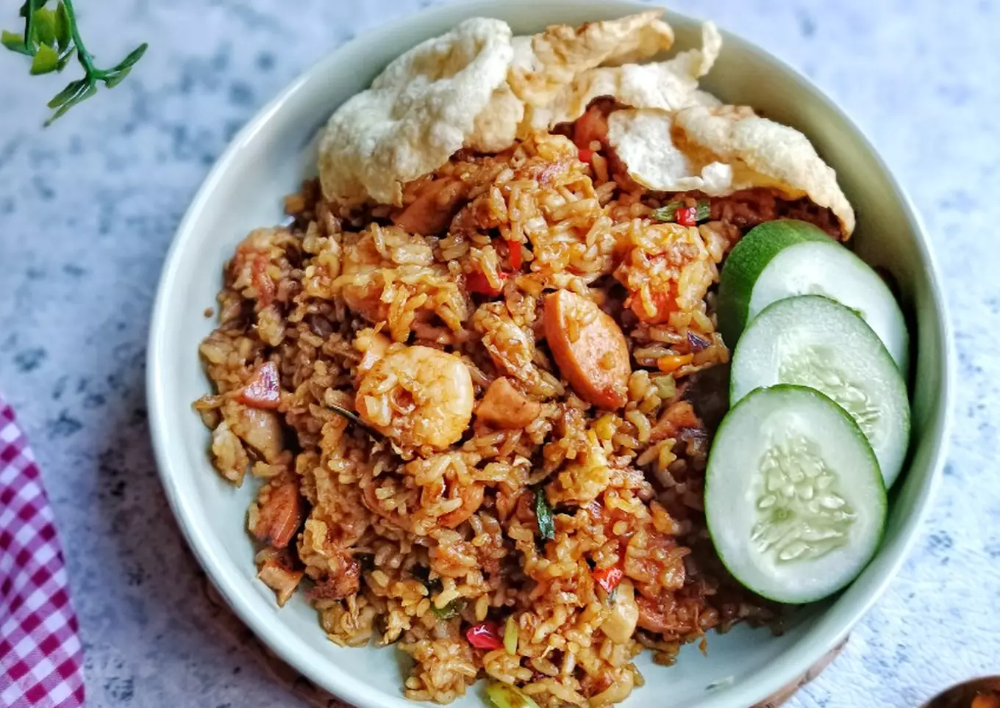

This page is containing fried rice recipes
What is fried rice?

Image Description:
This is fried rice with Indonesian style, we have a lot extra stuff like sausage, kerupuk, cucumber,
chilli, and much other ingredients.
List of ingredients: (You can adjust according to your need)
- 2 piring nasi putih
- 2 butir telur
- 50 gr fillet ayam potong dadu
- 6 ekor udang kupas
- 2 lonjor sosis potong²
- 2 batang daun bawang potong kasar
- 1 sdm margarin+2 sdm minyak untuk menumis
Bumbu iris dan parut:
- 2 siung bawang putih parut
- 3 butir bawang merah parut
- 1 buah cabe merah besar iris bulat
- 2 buah cabe rawit iris bulat
Bumbu saus, kecap dan bubuk:
- 1 sdm saus tiram
- 2 sdm kecap manis
- 2 sdm kecap ikan
- 1/2 sdm kecap asin
- 1 sdm kaldu bubuk
- 1/2 sdt merica bubuk
- 1/2 sdt gula pasir (option)
Steps:
- Lelehkan margarin tumis potongan daging ayam+ udang hingga berubah warna masukan sosis aduk rata hingga matang sisihkan
- Panaskan minyak ceplok telur buat orak arik sisihkan ke tepi wajan, masukan bawang merah dan bawang putih tumis hingga wangi, masukan irisan cabe dan daun bawang aduk rata
- Masukan tumisan ayam sosis udang aduk rata masukan nasi beri semua bumbu saus duo kecap lada bubuk kaldu bubuk aduk cepat hingga rata cek rasa sajikan
- Sajikan hangat bersama pelengkap